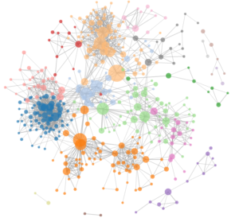

Healthy Me-A Medical and Personal Health Android App
Details:

Proposed butterfly minimization problem to analyze bipartite graphs in social network
Demonstrated the NP-hardness and monotone decreasing property of the problem
Created three novel pruning strategies and proposed group-based optimization algorithms
Evaluated the efficiency and effectiveness of proposed strategies and algorithms.
A Key Node Search Method of Butterfly Structure in Bipartite Graph
Details:
Contact Me
jiahongzheng2023@u.northwestern.edu
(224)382-3589